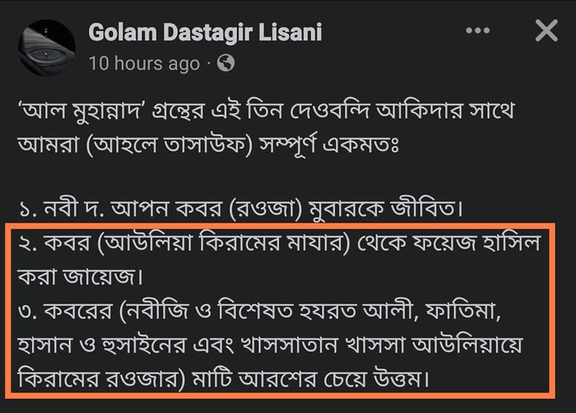

ভ্রান্ত সুফিবাদী আকিদাহ। যার কোনো দলিল কোরআন বা হাদিসে নেই। সাথে যোগ হয়েছে…
২৬ আগস্ট, ২০২২
ভ্রান্ত সুফিবাদী আকিদাহ। যার কোনো দলিল কোরআন বা হাদিসে নেই। সাথে যোগ হয়েছে শিয়াপ্রেমিদের ভ্রান্তি।
কবর থেকে ফয়েজ হাসিলের এ আকিদার একটা দলিল চাই। জাস্ট একটা দলিল। জয়িফ হলেও চলবে। সালাফে সালেহিন কবর থেকে ফয়েজ নিতেন বলে একটা বর্ণনা?
একইভাবে কোনো স্থান আরশের চেয়ে শ্রেষ্ট হওয়ার মাত্র একটা প্রমাণ চাই। যদি প্রমাণ না থাকে, তবে এমন আকিদাহ পোষণ করে নিজের ঈমানকে খতরায় ফেলবেন কেন, কারণ জানতে চাই?
